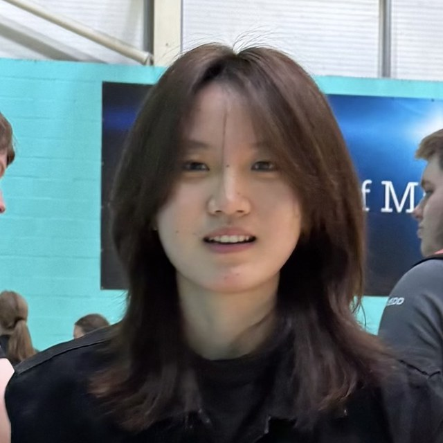

Caiyu Qu (屈彩钰)
About me
I am an M.S. student at New York University, jointly in the Courant Institute of Mathematical Sciences and the Stern School of Business. Currently, I am also a Research Assistant at Yale University, advised by Professor Arman Cohan. I was very fortunate to have Professor Chen Zhao and Professor Hua Shen supervise my research on deep research and HCI at NYU Shanghai this summer. Before coming to NYU, I received my B.Sc. in Information Science from South China Normal University, with a dual degree from the University of Aberdeen.
My research interests lie at the intersection of natural language processing, AI for research, and human-centred AI, and have taken shape through both my research projects and my hands-on experience building LLM applications. I am also drawn to AI in finance: in particular, the application of machine learning and NLP to financial problems, as well as quantitative research and trading-related applications.
I plan to pursue a CS Ph.D. after my master's degree and am actively looking for research opportunities and internships. Feel free to reach out by email!